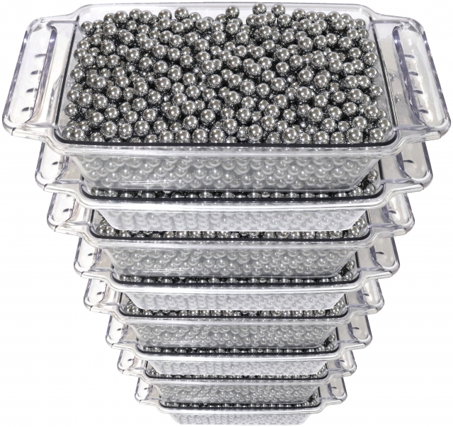
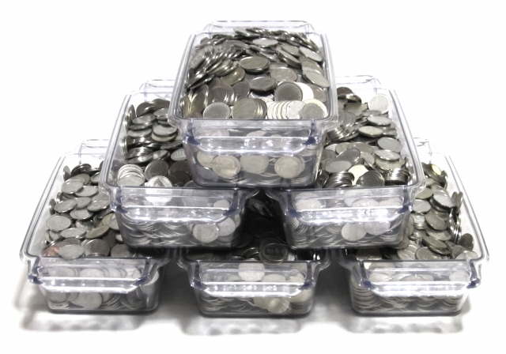

なぜパチンコで稼げるのか
私は大学生で、勉強をしながら、約一年半で250万円以上稼ぎました。
なぜ勝てたかというと、期待値がプラスの台を打っていたからです。
期待値がプラスとはどういうことかを説明していきます。
期待値について
コイントスで賭け事をするとします。表が出たら1000円、裏が出たら0円とします。
期待値が、1/2×1000+1/2×0=500円です。
このとき、この賭け事に参加する金額が500円ならば、期待値が0円になります。
パチンコではこの期待値が0円になる場所を基準にして、稼げる台か稼げない台かを判断します。
パチンコの期待値
パチンコでは1/319のくじを1回引くことを1回転するといいます。
王道的なパチンコでは、1/319を引き、当たると平均20000円分ほど出てきます。
当たったときに出てくる平均金額(平均出玉)が、一回の当たりまでの平均投資よりも多ければ、期待値がプラスになります。
上の機種の計算では、319回転を20000円以内に回せればいいわけですから、1000円でどのくらい回転すればいいかというと、319÷20で、15.95回転すれば、期待値は0円になります。
この、期待値が0円になる1000円あたりの回数のことを、パチンコではボーダーといいます。
ボーダーよりも回転する台を打てば、期待値がプラスになるということです。
スロットの期待値
スロットの期待値は、先程のコイントスの話に当てはめると、確率、表が出たときの金額、裏が出たときの金額、賭け事に参加する金額の全てが変わります。
スロットでは6段階の設定というものがあり、1が1番悪く、6が1番いいです。
この設定によって、確率が1/100から1/150になったり、平均枚数(一枚あたり20円)が300から500枚になったりします。
スロットではこの設定によって期待値が変わります。
その他当たりやすいゲーム数を狙うゾーン狙い、天井に近い台を打つ天井狙いなどがあるのですが、詳しくはこの記事で。